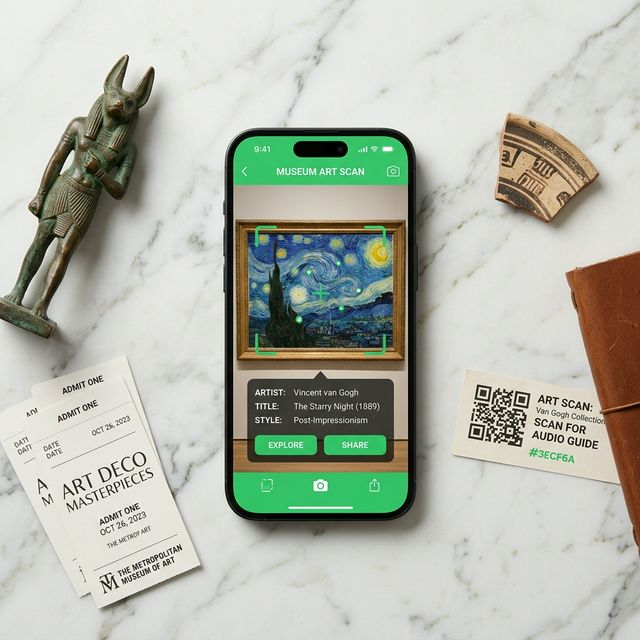

Gestalt brings art to life through vivid, visually descriptive audio — making museums, street art, and public sculpture accessible to visitors with vision loss, and richer for everyone.
Anonymous, Contemporary
This mural explores the chaotic logic of urban texture. The artist challenges the boundaries of public space through aggressive color blocking and staggered geometries.
An innovative product utilizing the latest in AI and accesibility to increase discoverability and comprehension of visual art all over the world.
We've created a visual image model that is designed to work as well in the MOMA as it is on the street.

Install the application and go about your day. As you explore Gestalt-enabled cities and insitituions, the world around you comes alive with a curated artistic experience.
For art with unique form, there are a series of fallbacks that can be implmented by institutions and artists to ensure coverage. QR Codes, Offline mode, and much more.
Our accessibility model writes rich, museum-quality descriptions from the artwork image alone. We then deliver them as natural speech — with haptic confirmation so blind and low-vision visitors never need to look at the screen.
Museums, galleries, public spaces, and street art all share one unified platform with separate location management, floor plans, and accessibility metadata.
Built for the DOJ's 2024 digital accessibility mandate. Zero infrastructure cost per venue. Haptic feedback, audio-first design, and automatic compliance scoring help institutions meet enforceable timelines.
No accounts, no downloads required for the web version. Just open the link and your camera does the rest.
Open Gestalt on your phone. The camera activates, CLIP loads on-device, and GPS begins tracking your position relative to nearby outdoor artworks.
Tap "Scan" and our model matches your camera frame against our artwork index in under a second. It's magic. No QR code needed, no beacon, no staff intervention. Outdoors, simply walk closer and GPS handles it.
The artwork info populates with the title, artist, year, and a dynamic visual description. Audio fires immediately with haptic confirmation — the experience works for blind visitors without ever looking at the screen.
Open the web app on any phone browser, or download the native iOS app for push notifications when you walk near outdoor artwork. For museums: Gestalt Institution Management provides ADA compliance scoring, audio description CMS, and visitor analytics in one portal.